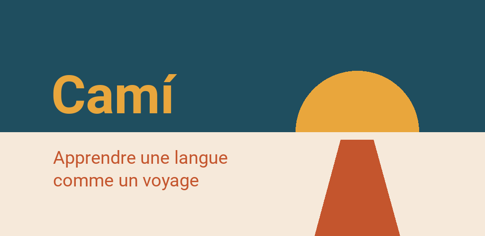

Camí – Apprendre les langues
Apprendre l'islandais, le catalan, le basque, le croate… — sans compte
Pour Android 8 ou plus récent


Camí est une application pour apprendre les langues, construite comme un voyage. Chaque étape est un lieu réel : Barcelone, le delta de l'Èbre, la serra de Tramuntana. Quand tu termines une étape, tu reçois une petite récompense — un proverbe, une recette, une scène sur place ou une carte postale qui reste en fond d'écran de l'application.
Quatorze langues, quatorze voyages
- Catalan : la Catalogne, Majorque, le Pays valencien
- Français : la France, la Suisse romande, la Wallonie
- Allemand : l'Allemagne du Nord, les Alpes, l'Autriche, la Suisse
- Anglais : la Grande-Bretagne, l'Irlande, Malte, Chypre
- Espagnol : l'Andalousie, la Castille, le Mexique
- Polonais : la Petite-Pologne, les Carpates, la Mazovie, la Baltique
- Danois : Copenhague, les îles, le Jutland
- Grec : Athènes, le Péloponnèse, la Crète, les Cyclades
- Croate : l'Istrie, la Dalmatie, Zagreb
- Italien : la Toscane, l'Ombrie, le Latium
- Islandais : le tour de l'île
- Basque : la Biscaye et le Guipuscoa
- Coréen : Séoul, la région de la capitale et le Gangwon
- Slovène : Ljubljana et la Gorenjska
Six cours commencent avec 55 étapes : tout le A1 et le A2, plus les premières étapes du B1 et du B2. L'anglais est entièrement gratuit, 94 étapes jusqu'au B2. L'islandais, le grec et le croate commencent avec 37 étapes, l'italien avec 52, le coréen avec 49, le basque avec 31 et le slovène avec 28 — ces quatre derniers continuent de grandir. Les explications sont en allemand, anglais, français, catalan, espagnol ou polonais : tu peux apprendre le catalan en français — ou l'allemand en catalan, l'anglais en français, et ainsi de suite. Changer la langue des explications ne coûte aucun progrès.
Ce qui est inclus
- Neuf types d'exercice : choix, textes à trous, paires, construction de phrases, écoute, classement, transformation, lecture et dialogues — à partir de l'A2, les trous et les dictées s'écrivent au lieu de se toucher
- Une histoire à écouter à la fin de chaque étape : des gens du coin qui discutent, lue ligne par ligne, avec des questions en chemin
- Des exercices de prononciation : Camí t'écoute et te montre le taux de correspondance (catalan, anglais, allemand, italien)
- Une colonne vertébrale grammaticale : chaque forme a son étape, avec la règle, des exemples et un mémento
- Des cartes de révision à intervalles croissants, tirées des leçons que tu as terminées
- Une carte dessinée de ton voyage, avec un aperçu de chaque région
- Un test de niveau, si tu ne pars pas de zéro
- Objectif du jour, objectif de la semaine et une série — sans minuteur et sans vies à perdre
- Un classement facultatif avec un pseudo, sans compte
Sans compte, hors ligne
Camí ne demande aucune inscription. Les cours et les cartes sont intégrés ; les photos, les voix et le paquet vocal pour la prononciation arrivent avec le cours depuis Google Play. Ta progression reste sur ton appareil. Pas de publicité, pas de pistage, pas d'achats. D'elle-même, l'app ne se connecte à internet que si tu le veux : pour participer au classement ou pour envoyer un problème avec « Commentaires ».
Tout est lu avec les voix propres et naturelles de Camí, dans toutes les langues sauf le basque. Dans les réglages, tu peux choisir la voix de ton téléphone à la place.